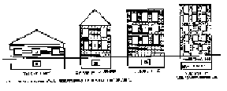
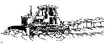
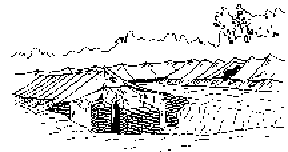
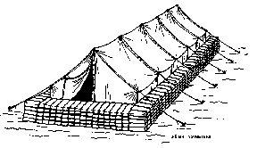

APPENDIX B
FIELD EXPEDIENT PROTECTIVE SYSTEMS AGAINST NUCLEAR, BIOLOGICAL, AND CHEMICAL ATTACK
Medical units must have protection from NBC attack and contamination to survive and function effectively. The extent of protection provided is only limited by the resources available and efforts of unit personnel. Protection as simple as an individually dug foxhole, or as elaborate as the subbasement of a concrete building may be used. Expedient protection from the effects of biological and chemical agents are much less labor intensive.
B-2. Protection Against Radiation
The level of protection from radiation is expressed in terms of shielding. Material is available on the battlefield to construct/prepare expedient fallout shelters that offer substantial shielding against gamma radiation (see Table B-1). Generally, the denser or heavier the material, the better shielding it offers. The degree of protection afforded by a fallout shelter is expressed as a „protection factor,¾ or a „transmission factor.¾ The protection factor is simply the fraction of the available radiation dose which penetrates the shelter and reaches those inside compared to the radiation received by an unprotected person. Thus, a protection factor of 2 indicates that an individual in the shelter receives one-half of the radiation dose he would receive if unprotected. A protection factor of 100 (associated with about six half-value thicknesses) indicates that only 1/100 or 1 percent of the radiation dose reaches those inside. Transmission factors are expressed in percentages, or in decimals. Either refers to that fraction of the ambient unshielded dose that is received by personnel within the shelter. Fallout gamma transmission factors for some common shelters are shown in Table B-2.
Table B-1. Shielding Potential of Common Materials Fallout Gamma Protection
MATERIAL 1/2 VALUE LAYER THICKNESS* STEEL 1.8 cm (.7") CONCRETE 5.6 cm (2.2") EARTH 8.4 cm (3.3") WATER 12.2 cm (4.8") WOOD 22.4 cm (8.8") * 1/2 Value Layer Thickness - Thickness of a given material which reduces the dose or dose rate to approximately one-half of that falling upon it. Table B-2. Transmission Factors for Nuclear Radiation*
ENVIRONMENTAL SHIELDING NEUTRONS INITIAL GAMMA RESIDUAL BUILT-UP CITY AREA (IN OPEN) 1 0.5 0.7 FOXHOLES 0.3 0.2 0.1 FRAME HOUSE: FIRST FLOOR 1 0.9 0.5 BASEMENT 0.5 0.3 0.1 MULTISTORY BUILDINGS: TOP FLOOR 1 0.9 0.1 INTERMEDIATE FLOORS 0.9 0.9 0.02 LOWER FLOOR 0.9 0.5 0.1 BASEMENT 0.5 0.3 0.01 SHELTER, CLOSED 91 CM 93 ft) EARTH COVER) 0.05 0.02 0.005 ARMORED VEHICLES: ARMORED PERSONNEL CARRIER 0.3 0.2 0.1 TANKS 0.3 0.2 0.1 WOODED FOREST 1 1 0.8 * INSIDE DOSE = TRANSMISSION FACTOR TIMES OUTSIDE DOSE. B-3. Expedient Shelters Against Radiation
a. In many cases it will be unnecessary to construct field expedient or other types of fallout shelters. There are many structures and terrain features available that afford a degree of fallout protection. Tunnels, caves, culverts, overpasses, ditches, ravines, and man-made structures are examples of existing fallout shelters. The best existing shelter is basements. Figure B-1 shows typical shelter protection provided in different buildings. Windows can be sandbagged or covered with dirt from the outside to provide additional protection.
b. Planners should attempt to locate HSS units near existing shelters, whenever possible. However, if an HSS unit is already established, or must be established where fallout shelters are not available, then a shelter must be constructed. Elaborate shelters are not required, since they need be occupied for only a few days. There are a number of field expedients which will serve to save personnel and patients even though they may not be comfortable for those few days.
Figure B-1. Typical shelter protection provided in different buildings.

c. When engineer support is available, a dozer trench about 2.7 meters (9 feet) wide and 1.2 meters (4 feet) deep can be dug (Figure B-2). The length of the trench will be determined by the number of patients/personnel to be sheltered. About 0.6 meter (2 feet) length of trench for each person to be sheltered is required. These trenches reduce exposure of personnel lying on the floor to about 20 to 30 percent of the radiation that they would receive in the open. Protection and comfort can be improved, as time permits, by digging the trenches deeper; undercutting the walls (care must be taken in this option; the earth may cave in); erecting tents over the trenches; and providing improved flooring. When used with other individual and collective protection measures, dozer trenches provide adequate fallout shelters for most situations; they can be provided in a minimum of time and effort. Trenches should not be dug in areas subject to flooding during rain storms. In sandy soil undercutting will not be possible; also some form of support to keep the walls from caving in will be required.
Figure B-2. Dozer trench.

d. Dug-in tents (Figure B-3) for hospitals provide more comfort and require less movement than the dozer trench; however, they have two drawbacks. First, they offer far less radiation protection than the dozer trench, and second, they require considerably more engineer effort.
Figure B-3. Dug-in tents.

e. Sandbag walls around the hospital tents as shown in Figure B-4, or lightly constructed buildings provide protection from fallout. Sandbag walls 1.2 meters (4 feet) high give significant protection (20 to 40 percent transmission factor); however, the effort required to achieve the protection is such that it is marginally feasible. Sandbagging is an effective means for supplementing other shelters by:
- Bolstering the shielding at weak points.
- Forming baffles at entryways.
- Blocking open ends of trenches.
- Covering windows and gaps.
f. When other shelters are not available, HSS units must prepare foxholes and trenches for patients and unit personnel. As time permits, these shelters are improved by deepening, covering, undercutting, and sandbagging.
Figure B-4. Sandbag walls around tents.

B-4. Expedient Shelters Against Biological and Chemical Agents
a. When collective protection shelters are not available well sealed shelters (TEMPER, ISO, GP) can significantly minimize or prevent the entry of chemical and biological agents. The ventilation system must be turned off and kept off right before, during and after the attack. The shelter must be totally sealed during this time to maximize protection. Table B-3 provides examples of protection values for well sealed shelters. For example, a well sealed TEMPER tent will only permit 1/60 of the chemical/biological agent outside to enter the shelter. If a persistent agent is used, be aware of the off gassing hazards. Persistent agents can penetrate through TEMPER fabric and create a vapor hazard inside. In a CB agent attack, ensure that all staff and patients are protected.
Table B-3. Ration of Nonpersistent Agent Concentrations (Inside/Outside) for Different Shelters
SHELTER RATIO INSIDE/OUTSIDE TEMPER Tent 1:60* General Purpose Tent Medium With Cotton Liner 1:50 General Purpose Tent Large With Cotton Liner 1:30 ISO Shelter 1:30 *The ventilation system must be turned off on all shelters to provide this level of protection b. Sealing shelters to prevent entry of CB agents does not require elaborate materials or procedures.
(1) Material needed for sealing shelters include, but are not limited to the following:
- Duct tape (or similar tape) for sealing.
- Velcro kits for TEMPER tents.
- Sand/dirt to seal base of general purpose tents.
- Plastic sheeting and tape to seal large openings, such as doors to general purpose tents.
(2) All vulnerable areas must be sealed. Seal:
- Joints in ISO shelters and GP tents with tape. Tape does not work very well on TEMPER fabrics, use Velcro kits.
- Base of GP tents with sand/dirt.
- Stove pipe openings with tape and plastic.
- Windows of GP tent with tape and plastic. Seal TEMPER tent windows by aligning and securing the Velcro border tightly; tape may be applied to the seams to provide some additional barrier.
- All ISO shelter doors with tape. Seal GP tent doors with plastic sheeting and tape.
- All windows, doors, and other opening of fixed sites with plastic and tape.
- All air ventilation system vents.
NOTE:
1. No entry/exit to shelters during a CB attack.
2. In hot climates the heat load will rise in sealed shelters with the ventilation system turned off. Personnel must carefully monitor each other and patients. All personnel must drink plenty of water to prevent heat injuries.
¦ About This Manual ¦ Preface ¦ Authorities ¦ Table of Contents ¦ Chapter 1 ¦ Chapter 2 ¦ Chapter 3 ¦ Chapter 4 ¦
¦ Chapter 5 ¦ Chapter 6 ¦ Chapter 7 ¦ Appendix A ¦ Appendix C ¦ Appendix D ¦ Appendix E ¦
¦ Appendix F ¦ Appendix G ¦ References ¦ Glossary ¦ Index ¦ Home ¦